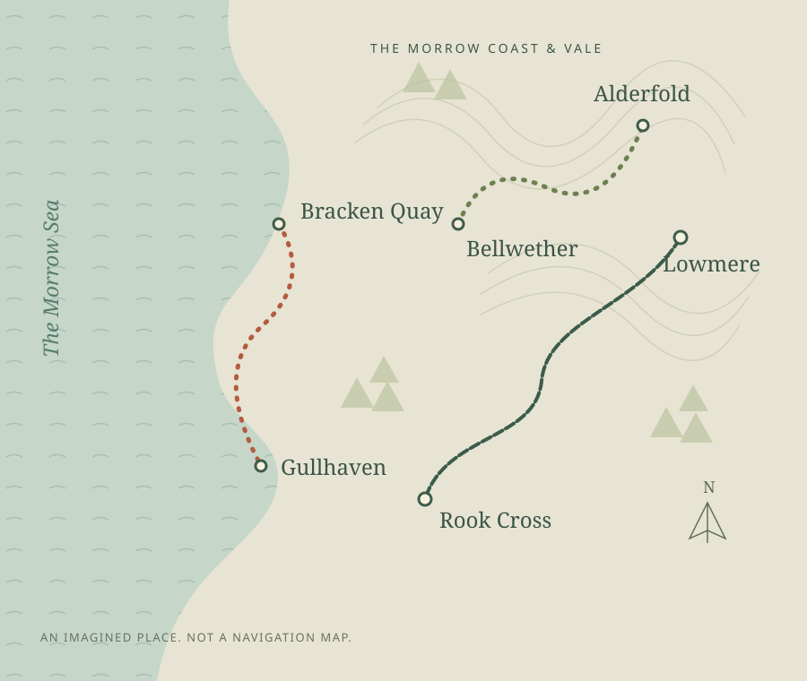

Nell Rowan
Routes & muddy boots
Nell walks the routes at the start of each season, with a pencil and an unreasonable number of oatcakes. She’s the reason the notes say “left at the crooked ash” rather than “continue north-west”.
Hello from the small desk
Three people, one well-thumbed timetable, and a firm belief that a weekend should feel longer than its packing list.

A late train. An extra night in Gullhaven. A walk to Saltglass Cove that was meant to fill an hour and somehow filled the whole day.
That’s the story we built Salt & Switchback around: the good bit of travel often happens when there’s less on the list. Our imagined desk sits above a bike shop in Gullhaven. We keep the collection small enough to know every turning, and every innkeeper’s name.
We’re a trip desk, not a guiding company. We put the weekend together; you walk it in your own company, at your own pace.
A team you can count on one hand
Routes & muddy boots
Nell walks the routes at the start of each season, with a pencil and an unreasonable number of oatcakes. She’s the reason the notes say “left at the crooked ash” rather than “continue north-west”.
Beds, breakfasts & timetables
A former station bookseller with strong feelings about window seats. Ivo finds the small inns, checks the connections, and knows which Lowmere breakfast comes with the best damson jam.
The desk & the useful answers
Mara turns “somewhere quiet, but not too flat” into a proper weekend. She writes the packing notes, remembers the dietary requests, and is usually the person on the other end of an enquiry.
The way we do things
Three itineraries, not three hundred. A wet-weather alternative in the notes, sensible daily distances, and time for the bakery to open.
Small inns and guesthouses, booked directly. Breakfast is included. On the point-to-point walks, your overnight bag goes ahead.
The route pages list the nights, local travel, and supplements. Mainline fares and lunches are extra. No invented “from” price that disappears when you ask.
A question is a good place to start
A month, a rough party size, and whether you’d rather climb a hill or watch one from a train window. That’s enough to start a conversation.
hello@saltandswitchback.example
Demo address only — opens your email app but cannot receive bookings.